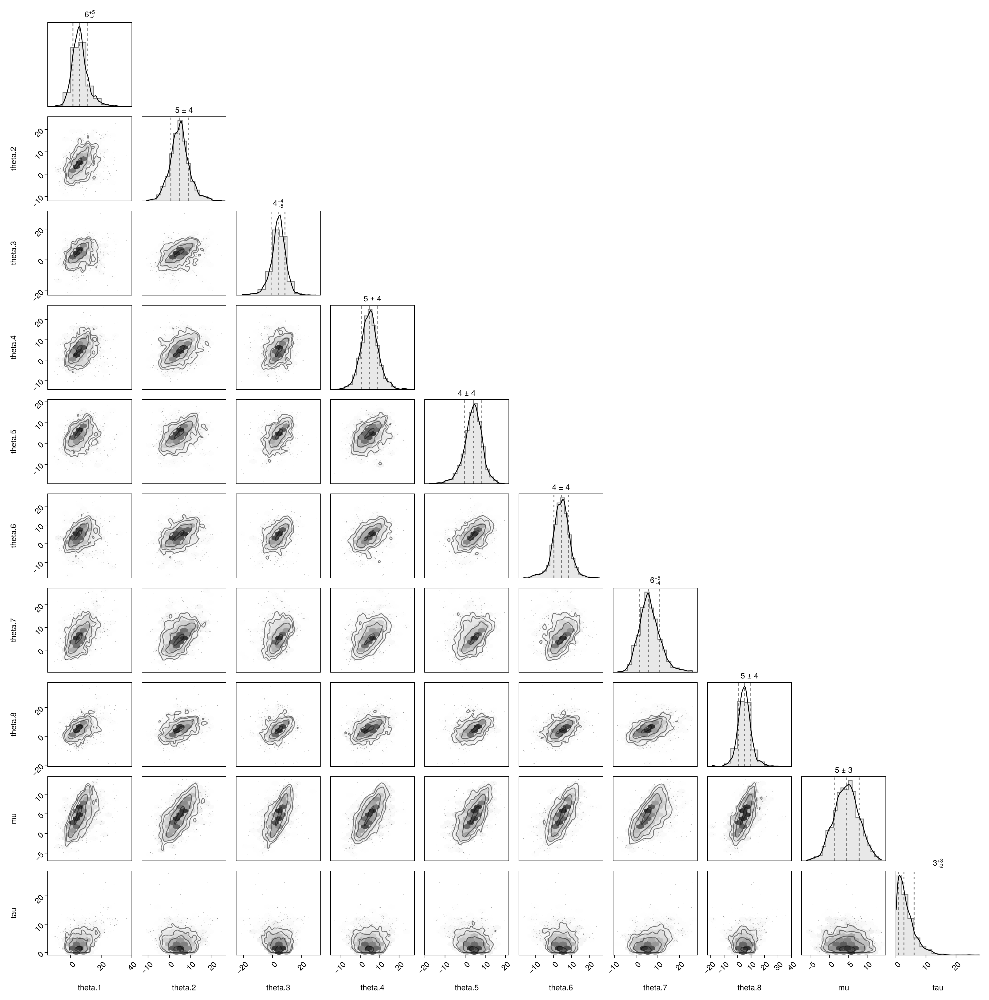
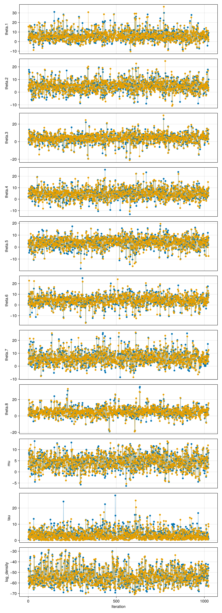
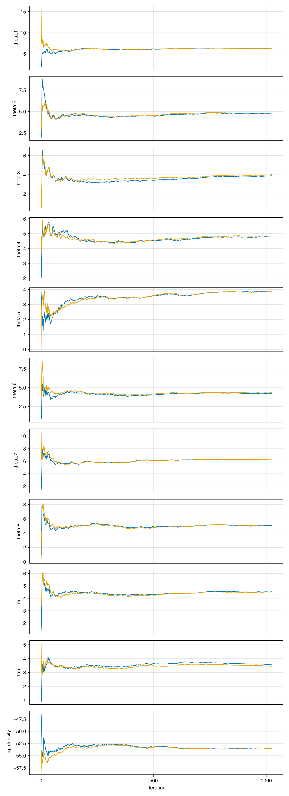
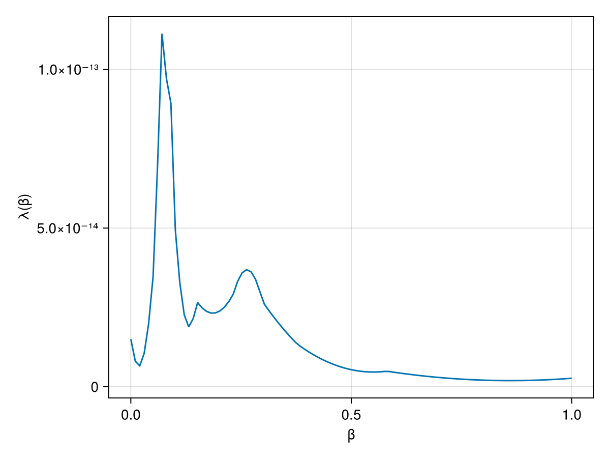
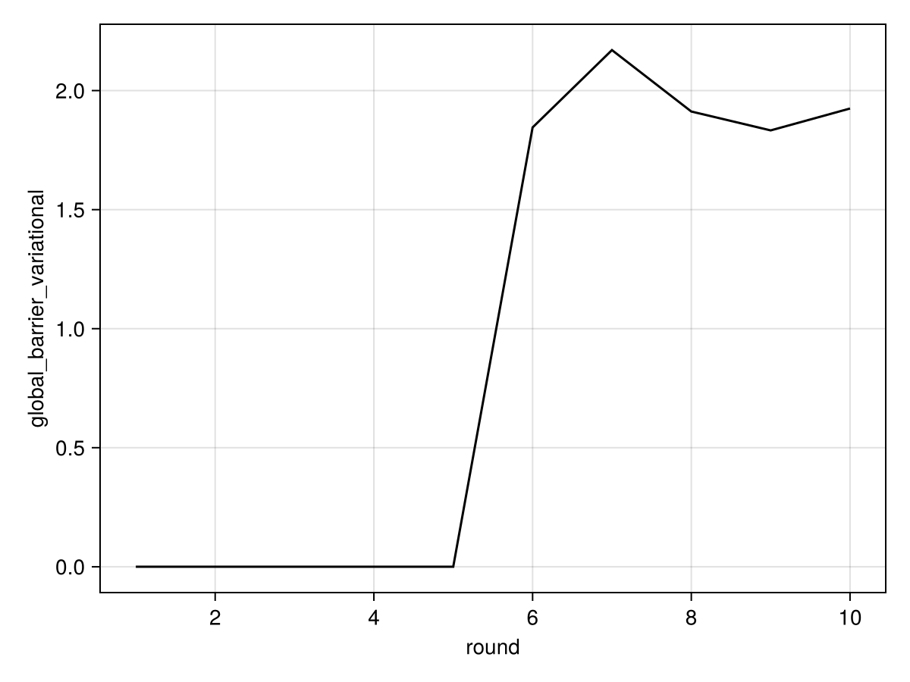

Description
A common posterior distribution, based on data from Rubin (1981) used to to illustrate hierarchical modelling Gelman et al. (2013). It is also used to benchmark MCMC methods, due to a mild "funnel-type" behaviour. The terminology 'centered' refers to the original parameterization, to contrast with a reparameterization which is less challenging and hence less interesting in an MCMC benchmarking context.
Pair plot
Diagonal entries show estimates of the marginal densities as well as the (0.16, 0.5, 0.84) quantiles (dotted lines). Off-diagonal entries show estimates of the pairwise densities.
Movie linked below (🍿) superimposes 100 iterations of MCMC.
 🔠Full page â🿠Movie â🔗 Info{kind=link}
Trace plots
 🔠Full page{kind=link}
Intervals
Nominal coverage requested: 0.95 (change via interval_probability option which can be passed to report()).
The credible interval (naive_left, naive_right) is constructed using the quantiles of the posterior distribution. It is naive in the sense that it does not take into account additional uncertainty brought by the Monte Carlo approximation.
The radius of a Monte Carlo confidence interval with the same nominal coverage, constructed on each of the end points of the naive interval is shown in mcci_radius_left and mcci_radius_left.
Finally, (fused_left, fused_right) is obtained by merging the two sources of uncertainty: statistical, captured by the credible interval, and computational, captured by the confidence intervals on the end points.
| parameters | naive_left | naive_right | mcci_radius_left | mcci_radius_right | fused_left | fused_right |
|---|---|---|---|---|---|---|
| theta.1 | -2.91996 | 19.4868 | 0.598527 | 1.22427 | -3.51849 | 20.7111 |
| theta.2 | -3.79536 | 15.0073 | 0.612323 | 1.20613 | -4.40768 | 16.2135 |
| theta.3 | -7.20749 | 13.1201 | 1.29443 | 0.908654 | -8.50192 | 14.0288 |
| theta.4 | -3.94732 | 14.8018 | 0.815731 | 0.702185 | -4.76305 | 15.504 |
| theta.5 | -6.02269 | 12.3214 | 1.18014 | 0.744087 | -7.20284 | 13.0655 |
| theta.6 | -6.34239 | 13.3559 | 1.38106 | 0.681316 | -7.72345 | 14.0372 |
| theta.7 | -2.21928 | 17.7011 | 0.850694 | 1.76646 | -3.06998 | 19.4676 |
| theta.8 | -5.01758 | 16.8218 | 1.0512 | 0.991015 | -6.06878 | 17.8128 |
| mu | -1.65904 | 10.923 | 0.457573 | 0.345867 | -2.11661 | 11.2688 |
| tau | 0.201119 | 11.3367 | 0.0455789 | 0.736348 | 0.15554 | 12.0731 |
| log_density | -65.9399 | -35.3575 | 0.662849 | 1.62981 | -66.6027 | -33.7277 |
Moments, MCSE, ESS, etc
The ESS/MCSE/Rhat estimators use InferenceReports.safe_summarystats(chains), which are based on the truncated autocorrelation estimator (Geyer, 1992, sec 3.3) computed with FFT with no lag limit. As a result, these estimators should be safe to use in the low relative ESS regime, in contrast to the defaults used in MCMCChains, which lead to catastrophic ESS over-estimation in that regime.
| parameters | mean | std | mcse | ess_bulk | ess_tail | rhat | ess_per_sec |
|---|---|---|---|---|---|---|---|
| theta.1 | 6.21749 | 5.4945 | 0.12166 | 2058.71 | 1762.69 | 1.00127 | missing |
| theta.2 | 4.82666 | 4.53564 | 0.102923 | 1955.57 | 1786.66 | 1.0021 | missing |
| theta.3 | 3.95023 | 5.22829 | 0.128273 | 1664.99 | 1944.79 | 1.00379 | missing |
| theta.4 | 4.8114 | 4.60648 | 0.102313 | 2004.65 | 1552.09 | 1.00123 | missing |
| theta.5 | 3.85744 | 4.52519 | 0.102747 | 1950.62 | 1602.7 | 1.00141 | missing |
| theta.6 | 4.29979 | 4.76573 | 0.122007 | 1506.52 | 1892.75 | 1.00003 | missing |
| theta.7 | 6.22316 | 4.93107 | 0.124925 | 1562.93 | 1819.31 | 1.00081 | missing |
| theta.8 | 5.10046 | 5.31979 | 0.149947 | 1282.59 | 1724.97 | 1.00169 | missing |
| mu | 4.52265 | 3.26878 | 0.0797936 | 1698.75 | 1317.49 | 1.00234 | missing |
| tau | 3.50489 | 3.04328 | 0.0789121 | 1402.89 | 1109.54 | 1.00194 | missing |
| log_density | -53.5488 | 7.64762 | 0.212737 | 1362.43 | 1018.66 | 1.00798 | missing |
Cumulative traces
For each iteration $i$, shows the running average up to $i$, $\frac{1}{i} \sum_{n = 1}^{i} x_n$.
 🔠Full page{kind=link}
Local communication barrier
When the global communication barrier is large, many chains may be required to obtain tempered restarts.
The local communication barrier can be used to visualize the cause of a high global communication barrier. For example, if there is a sharp peak close to a reference constructed from the prior, it may be useful to switch to a variational approximation.
 🔠Full page â🔗 Info{kind=link}
Local communication barrier (variational)
Local communication barrier for the variational leg (ideally smaller than the non-variational one).
 🔠Full page â🔗 Info
🔠Full page â🔗 Info GCB estimation progress
Estimate of the Global Communication Barrier (GCB) as a function of the adaptation round.
The global communication barrier can be used to set the number of chains. The theoretical framework of Syed et al., 2021 yields that under simplifying assumptions, it is optimal to set the number of chains (the argument n_chains in pigeons()) to roughly 2Λ.
Last round estimate: $1.454392162258955e-14$
🔠Full page â🔗 Info{kind=link}
GCB estimation progress (variational)
Estimate of the Global Communication Barrier (GCB) as a function of the adaptation round for the variational chain.
Last round estimate: $1.9248223311443846$
 🔠Full page â🔗 Info{kind=link}
Evidence estimation progress
Estimate of the log normalization (computed using the stepping stone estimator) as a function of the adaptation round.
Last round estimate: $-32.058543933538196$
🔠Full page â🔗 Info{kind=link}
Round trips
Number of tempered restarts as a function of the adaptation round.
A tempered restart happens when a sample from the reference percolates to the target. When the reference supports iid sampling, tempered restarts can enable large jumps in the state space.
🔠Full page â🔗 Info{kind=link}
Swaps plot
🔠Full page{kind=link}
Pigeons summary
| round | n_scans | n_tempered_restarts | global_barrier | global_barrier_variational | last_round_max_time | last_round_max_allocation | stepping_stone |
|---|---|---|---|---|---|---|---|
| 1 | 2 | 0 | 7.10543e-15 | 7.10543e-15 | 0.0506306 | 3.12944e6 | 0.0 |
| 2 | 4 | 0 | 0.0 | 7.10543e-15 | 0.018473 | 287920.0 | -5.32907e-15 |
| 3 | 8 | 0 | 7.10543e-15 | 1.06581e-14 | 0.0379588 | 579360.0 | 1.77636e-15 |
| 4 | 16 | 8 | 1.33227e-14 | 1.42109e-14 | 0.0782277 | 1.1873e6 | 1.77636e-15 |
| 5 | 32 | 24 | 7.99361e-15 | 9.76996e-15 | 0.16131 | 2.15973e6 | -3.55271e-15 |
| 6 | 64 | 33 | 1.19904e-14 | 1.84532 | 0.482482 | 4.63901e7 | -32.1981 |
| 7 | 128 | 72 | 1.06581e-14 | 2.17021 | 0.787598 | 8.98167e7 | -32.2939 |
| 8 | 256 | 159 | 1.35447e-14 | 1.91212 | 1.67375 | 1.81834e8 | -32.2042 |
| 9 | 512 | 315 | 1.38778e-14 | 1.83285 | 3.75364 | 3.58721e8 | -32.1978 |
| 10 | 1024 | 625 | 1.45439e-14 | 1.92482 | 6.57718 | 7.26076e8 | -32.0585 |
Pigeons inputs
| Keys | Values |
|---|---|
| extended_traces | false |
| checked_round | 0 |
| extractor | nothing |
| record | Function[Pigeons.traces, Pigeons.round_trip, Pigeons.log_sum_ratio, Pigeons.timing_extrema, Pigeons.allocation_extrema] |
| multithreaded | false |
| show_report | true |
| n_chains | 10 |
| variational | GaussianReference(Dict{Symbol, Any}(:singleton_variable => [6.217487028983885, 4.826659190680483, 3.950228853257528, 4.811397963095365, 3.857440248042776, 4.299793477614982, 6.223156787798201, 5.100459025248878, 4.522648905333596, 0.8393077168872618]), Dict{Symbol, Any}(:singleton_variable => [5.494496859251043, 4.535638455227883, 5.228286284063153, 4.60648394508089, 4.52519151070326, 4.765731778404746, 4.9310686243161825, 5.319791735950217, 3.268782499674879, 1.020010346054867]), 5) |
| explorer | nothing |
| n_chains_variational | 10 |
| target | StanLogPotential(eight_schools_centered_model) |
| n_rounds | 10 |
| exec_folder | nothing |
| reference | nothing |
| checkpoint | false |
| seed | 1 |
Reproducibility
run(`git clone https://github.com/Julia-Tempering/InferenceReport.jl`)
cd("InferenceReport.jl")
run(`git checkout 0c7301eca2344550e208ca70eff2a1ff6440f00c`)
using Pkg
Pkg.activate(".")
Pkg.instantiate()
using Pigeons
inputs = Inputs(; target = Pigeons.stan_eight_schools(), variational = GaussianReference(first_tuning_round = 5), n_chains_variational = 10, n_rounds = 10, record = [traces; round_trip; record_default()])
pt = pigeons(inputs)